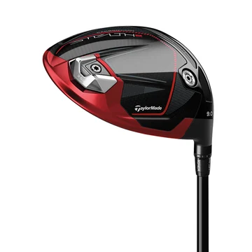
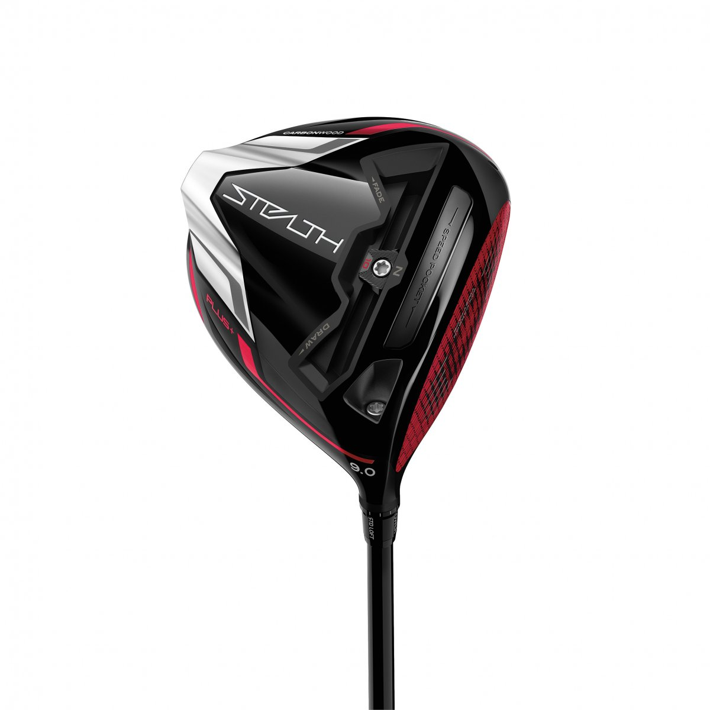

Stealth 2+ har en nykonstruerad träffyta som bygger på den enastående bollhastighet som den ursprungliga 60X Carbon Twist Face levererade genom optimering av energiöverföringen.
Den nya konstruktionen har en avancerad ICT-version (Inverted Cone Technology) som bibehåller bollhastigheten vid orena träffar och ger mer förlåtande egenskaper.
Den väger 24 gram (två gram mindre än den ursprungliga Stealth-träffytan) och är konstruerad med ett utökat COR-område som ger större sweetspot och bättre prestanda över hela träffytan.
Den kolfiberförstärkta kompositringen ger ett enhetligt driverhuvud som frigör ytterligare massa för ytterligare förlåtande egenskaper.
Den korrigerande Twist Face-funktionen i kombination med avancerad ICT bibehåller hög bollhastighet och precision även vid orena träffar.
Ett lättviktshuvud helt i kolfiber gör att ingenjörerna kunnat omfördela massa och placera vikt strategiskt för optimal utgångsvinkel och förlåtande egenskaper.
Träffytan, 60X Carbon Twist Face, är bestruken med polyuretan som försetts med en revolutionerande teknik med nanotextur.
Bestrykningen med nanotextur används för finjustering av utgångsvinkel och backspinn för optimering av totallängden oavsett spelförhållanden.
Den vikt som sparats med 60x Carbon Twist Face och huvudet helt i kolfiber gav möjlighet till en skjutbar femtongramsvikt.
Den är utformad för att ge kontroll över bollbanan genom att flytta massa i sulan och skapa önskad bollflykt.
Den flexibla Speed Pocket-konstruktionen ger maximal bollhastighet och ytterligare förlåtande egenskaper vid tunna träffar.

Nykonstruerad träffyta som bygger på den enastående bollhastighet som den ursprungliga 60X Carbon Twist Face levererade genom optimering av energiöverföringen.
Den nya konstruktionen har en avancerad ICT-version (Inverted Cone Technology) som bibehåller bollhastigheten vid orena träffar och ger mer förlåtande egenskaper.
Den väger 24 gram (två gram mindre än den ursprungliga Stealth-träffytan) och är konstruerad med ett utökat COR-område som ger större sweetspot och bättre prestanda över hela träffytan.
Den kolfiberförstärkta kompositringen ger ett enhetligt driverhuvud som frigör ytterligare massa för ytterligare förlåtande egenskaper.
Den korrigerande Twist Face-funktionen i kombination med avancerad ICT bibehåller hög bollhastighet och precision även vid orena träffar.
Ett lättviktshuvud helt i kolfiber gör att ingenjörerna kunnat omfördela massa och placera vikt strategiskt för optimal utgångsvinkel och förlåtande egenskaper.
Träffytan, 60X Carbon Twist Face, är bestruken med polyuretan som försetts med en revolutionerande teknik med nanotextur.
Bestrykningen med nanotextur används för finjustering av utgångsvinkel och backspinn för optimering av totallängden oavsett spelförhållanden.
Inertia Generator förblir den grundläggande källan till finjusterade aerodynamiska egenskaper.
Resultatet är en mycket snabb huvudform som bidrar till högre svinghastighet i nedsvingen för golfspelare på alla nivåer.
En bakvikt på 25 gram ger otroligt stort motstånd mot vridning och förlåtande egenskaper.
Den flexibla Speed Pocket-konstruktionen ger maximal bollhastighet och ytterligare förlåtande egenskaper vid tunna träffar.
Den flexibla Speed Pocket-konstruktionen ger maximal bollhastighet och ytterligare förlåtande egenskaper vid tunna träffar.

Efter tjugo års utveckling är titanets era slut.
En helt ny 60X Carbon Twist Face är 44 % lättare än motsvarande träffyta i titan samtidigt som den också är 11 % större än på SIM2- och SIM2 Max-driver samt nästan 20 % större än på 2020 års SIM-driver.
Sextio lager kolfiber med strategisk utformning ger optimal energiöverföring och hög bollhastighet över en stor yta, vilket ger maximal längd och förlåtande egenskaper.
Träffytan har också försetts med en revolutionerande ny teknik där en polyuretanbestrykning med nanotextur finjusterar utgångsvinkel och backspinn för maximal längd i alla förhållanden.
Den vikt som sparats med 60x Carbon Twist Face gav möjlighet till ett spår med en skjutbar tiogramsvikt.
Detta ger kontroll över bollbanan genom att förskjuta massa i sulan och skapa önskad bollflykt.
En asymmetrisk Inertia Generator ger utmärkta aerodynamiska egenskaper och den mycket snabba huvudformen bidrar till högre svinghastighet i nedsvingen för golfspelare på alla nivåer.
TaylorMades mest flexibla Thru-Slot Speed Pocket™-konstruktion ger maximal bollhastighet och ytterligare förlåtande egenskaper vid tunna träffar.